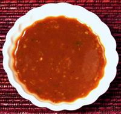

 |
Nuoc Mam Me - Tamarind SauceVietnam - Nuoc Mam Me | ||||
| Makes: Effort: Sched: DoAhead: |
1/2 cup * 15 min Best |
This Vietnamese dipping sauce is popular with fried fish and works well with fried chicken and similar meats. I make it without sugar, but in Southeast Asia they like things sweeter. | |||
|
|
2 2 1/4 2 1/2 1 |
cl c T t T |
Thai Chili (1) Garlic Tamarind pulp (2) Fish Sauce (3) Sugar (opt) Water |
Make: - (15 min)
|